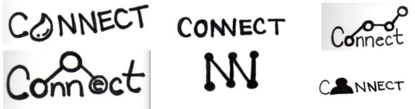

The cloud storage industry is booming along with the increasing
need to collaborate and work remotely. Connect is a new innovative
cloud platform well suited for storing and sharing data from
anywhere in the world.
Objective:
Creating a desktop site where files can be stored, shared, and
accessed anytime, from anywhere.
My Role:
UX Researcher, UX Designer
Project Duration:
3 weeks of 30 hours per week
Tools:
Figma, Google Forms, Usability Hub
Problems
Users cannot collaborate in real-time
Users have trouble accessing stored files
User are unable to share document(s) with other people
Solution
Construct a cloud storage platform that enables users to save
files, share documents, and access stored data securely from
anywhere.
Process
I played the role of the UX Researcher and UX Designer during the
development of Connect. To resolve the problem with accessing stored
files, files are saved automatically on this cloud platform. Once
saved, users have the option to share their documents with other
people and decide the capacity in which to involve others: viewer,
commenter, or editor. Through the sharing of files, users are given
the opportunity to collaborate with others in real-time. Now it’s
time to reflect on the process of how Connect was put together over
the course of three weeks.
User Surveys
To construct the cloud storage platform, I first gathered user
survey results. Twenty-one participants completed the survey via
Google Form.
Results
The 3 top used cloud storage platforms are: Google Drive (95.2%),
Dropbox (71.4%), and Apply iCloud (47.6%).
90.5% of participants use cloud storage for personal use and 71.4%
use it for work.
61.9% of participants are disappointed regarding not having access
to enough free space in cloud storage.
95.2% of participants store pictures via a cloud storage platform.
95.2% of participants access cloud storage via their laptops.
Take Away Message
Users value free storage space on the cloud platform. They mostly
use the platform for personal use and/or work. Many users share
pictures and documents with other people through cloud platforms.
Competitive Analysis
After reviewing the survey results, I conducted a competitive analysis
on the top three cloud storage platforms used among my survey
participants: Google Drive, Dropbox, and Apple iCloud.
Google launched Google Drive back in 2012. This cloud storage
platform offers the highest free storage space of 15 GB. However,
the free storage space includes email received in the Google
account.
Dropbox is older than both Google Drive and Apple iCloud; it was
launched in 2008. Users can share links with other people and add
expiration dates and passwords for extra protection. Unfortunately,
users with a basic plan do not have access to all these features.
Apple iCloud was launched in 2011. It’s known for having top notch
security. Its main weakness is that it has a limited audience
because only Apple users can access Apple iCloud.
Plan of Action
Ways to set the new cloud storage apart that stands out from its
competitors:
User friendly
Larger amount of free storage space (50GB)
Easy to share files and collaborate in real-time
All features are made readily available to all users no matter
their storage plan
User Personas
The data collected from the preliminary stages allowed me to create
two user personas. These user personas helped bring a human touch to
the whole situation, making this project more relatable and
captivating.
Jasmine Reyes
Age:28 /Location Miami, Florida
Product: Google Drive, Apple iCloud
Bio
Jasmine is a busy grad student working to pursue her PHD degree in
psychology. She uses Google Drive to collaborate with her peers.
On her free time, she hangs out with family and friends.
Goals
Share files with family and friends
Store all pictures from camera/iphone
Collaborate with other students on group projects
Frustrations
Not user-friendly
Not enough free space
Internet connection required
"Thanks to coud I now can store all my precious memories without
losing any sleep."
Victor Johnson
Age:35 /Location Dallas, Texas
Product: Google Drive, Dropbox
Bio
Victor is an entrepreneur pursuing a career in Real Estate. He is
very hardworking and devoted to his new company. Victor is always
traveling and working to build connections. He is always
collaborating with employees on different projects.
Goals
Access files when traveling
Create PowerPoint presentations
Share and collaborate with employees on projects
Frustrations
Security/Privacy
Running out of free storage
Internet connection required
"The key is having quick access to my documents no the go."
User Stories
After creating the user personas, I took time to reflect upon the
different tasks required when on the cloud platform and rated the
tasks based on their level of importance in relation to the needs of
both the stakeholder and users.
By using user stories, I was able to identify the most important
tasks when using cloud storage platforms.
Tasks of High Importance
1.) I want to sign up/log in.
2.) I want to create a new document.
3.) I want to upload a file/folder from my computer.
4.) I want to share a file with somebody else.
5.) I want to move a file to a folder.
6.) I want to log out.
User Flows
Once I identified the most important tasks, I sketched out the user
flows and finalized them digitally in the program; Draw.io.
The user flows were like the blueprint of a house. Now I had to build
the structure of the house by constructing wireframes for each task. I
then worked on the clickable prototype after completing the wireframe
in Figma.
Once I finalized the clickable prototype, I conducted a
usability test with three participants. The test focused on
three specific tasks, which I chose from the six highly
important tasks.
1.) Sign up for a new account
2.) Move “File 1” to “Folder 1”
3.) Upload a file called “Document 1”
Only the uploading task was completed successfully by all three
users. User 3 recommended including a confirmation message after
completing the uploading task. For onboarding, none of the
participants clicked the “Try it free” button on their first
attempt. Two out of the three participants found the second screen
for the onboarding process confusing because they gravitated
towards the log-in section instead of the sign-up section, which
was found on the left side of the page.
Lessons Learned from Usability Testing
Although I anticipated the onboarding task to be the easiest of
the three tasks, I was surprised to observe the users struggling
to find the right button to click on the landing page. The “Try it
free” button was placed on the landing page as a way to motivate
new users to sign up for a free account. However, this button did
not indicate that it was the sign up button. Instead, it caused a
lot of confusion, and the participants clicked on different
options before selecting the correct button.
Updates Made to Wireframe
“Try it free” button was changed to “Sign Up Free.”
Second screen for the onboarding process was eliminated.
“Move Date” selection was changed to “Move Now.”
Selections on the left sidebar of the dashboard page were
reorganized.
Confirmation message was added after the completion of uploading
a task.
Branding
The prime mission of this cloud storage platform is to create a space
where people can stay connected, help one another, and thrive
together. For example, users can connect to family and friends by
sharing pictures. Users can also connect with their co-workers by
collaborating on projects. I aimed for a simple brand name, so I
looked for a self-explanatory title. Once I established the title of
the cloud platform, I started to design a logo. It was important to
create a simple brand that reflected the idea of connection via
sharing files, pictures, and videos. I started with a few logo
sketches.

As time went on, I slowly refined the brand into its final
composition.
Moodboard
After finalizing the logo, I began to work on the moodboard, which
helped me to establish the color palette for this platform. The
original moodboard consisted of three primary colors: red, yellow, and
blue. However, after constructing the landing page with the primary
colors, it became apparent that the colors were not simple to work
with afterall. Those colors were very bold and may have caused
heightened senses for some users, such as danger due to the red color.
Lesson Learned
Since using primary colors did not illustrate the idea of
simplicity, I transitioned to using muted colors to create a sense
of calmness. By creating a sense of calmness and relaxation, users
will want to spend more time on the cloud storage platform,
especially since the hope is to have users collaborate on projects
via this site.
Style Guide
The Connect logo is available in two configurations: black and
white. On a light background, the black version must be used and
vice versa. The whitespace around the Connect logo should always
be equal to the circles within the mark. The font Questrial
resembles the quality of simplicity because there is no ear, tail,
and link noted, which makes the brand easy to read. In contrast,
Oleo Script is a bit more complex and quirky. This idea that
opposites attract and that no two individuals are the same make
this combination beautiful.
The information gathered from the style guide allowed me to proceed
with the high-fidelity mockup. All the changes that were made to the
wireframe after the usability testing were incorporated within this
stage as well. After designing the high-fidelity mockup, I
constructed the clickable prototype.
I conducted the preference testings remotely via a site called
Usability Hub. The preference testing helped me to acquire data
from potential users about their preferences.
Change in Design
The “Sign Up Free” button was used on the landing page instead
of the original “Try it free” button. By including the sign up
phrase within the button, users could immediately understand
that this button was involved with the onboarding process.
Preference Testing Sample: Onboarding button on landing page
Which button for creating a new account would you prefer?
Why did you choose that one?
"Sign Up Free" button
"It's more clear."
“It tells me more about what I’ll actually be doing. Assuming
both of these buttons do the same thing, ‘try’ could be a demo
and something If I’d like to sign up, I’d like to know that
I’m signing up.”
Out of 15 participants:
73% chose "Sign Up Free" button
Usability Testing II
After finalizing the clickable prototype, I conducted another
usability test with three participants. The same tasks used in the
first usability test were performed by three different users.
Although I anticipated all three tasks to be completed without any
trouble, the task of moving a file into a folder was not completed
successfully on the first attempt. Two out of the three users tried
to drag “File 1” into “Folder 1.” Nevertheless, all users selected
the “Move Now” button once they realized the dragging method had
failed.
Lesson Learned
The dragging feature is a method that many users like to use
because it’s quick and easy. Also many are now accustomed to
this option. When designing the process of completing certain
tasks I must do my best to incorporate the dragging feature or
the right click method whenever possible. Although I may not be
able to test these methods via Figma, I will inform the Web
Developer team of these important designs.
Conclusion
The big takeaway lesson I learned while working on this project;
is the importance of non-verbal cues. Although the users never
complained about the use of primary colors on the landing page, I
found the facial expressions and confusion that conveyed their
difficulties with navigating the page.
Therefore, as an UX Designer, it is important that I avoid getting
attached to a design because if the user does not respond
positively to my work, I must not hesitate to change and redesign
it.
In my case, redesigning the landing page and incorporating the new
color palette felt like a step backward, and it took a lot of work
but in the end, it was worth every second. When I allow the
research and results I collected from different testing to dictate
the direction of my design, I will design a stronger and more
well-built end product.
Modifying the design according to the responses of potential users
is inspiring. This scope of practice challenges me to be more
observant and intentional, while being a risk-taker who is not
afraid to think outside of the box.